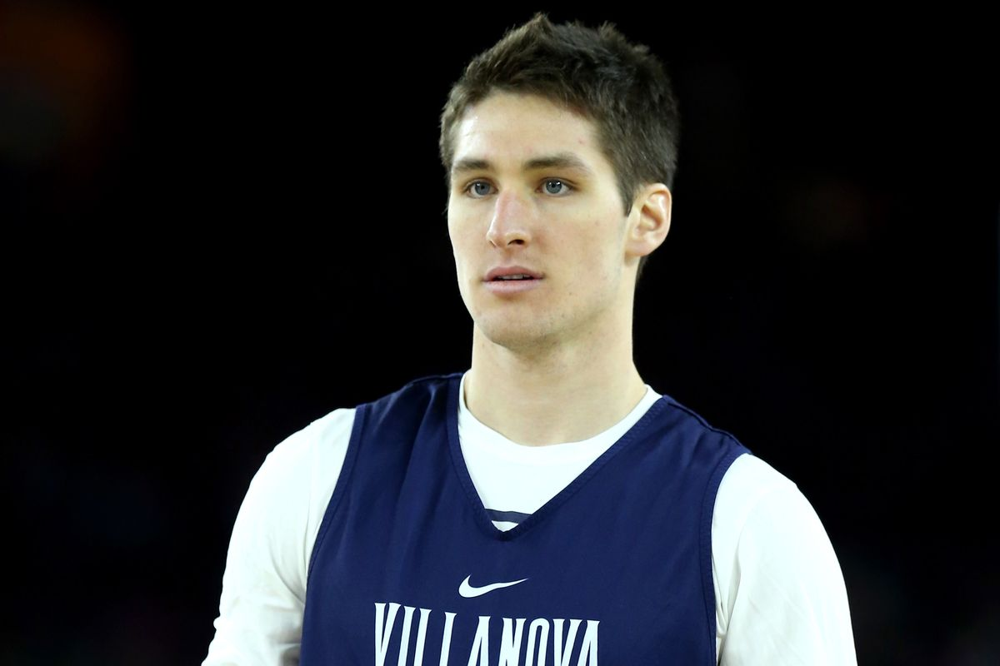

The Dolphins announced Tuesday the newest members of the Walk of Fame in the Joe Robbie Alumni Plaza at Hard Rock Stadium, and the group consists of six players who made major contributions from the late 1960s all the way through this decade.
The six players, who will be honored at Hard Rock Stadium on Dec. 2 prior to the team’s game against the Buffalo Bills, are Dick Anderson, Mark Clayton, Mark Duper, Jon Giesler, John Offerdahl and Jason Taylor. Nat Moore, Dolphins Senior Vice President for Special Projects and Alumni Relations and Advisor to the CEO, made the announcement at Wynwood Walls in Miami. 